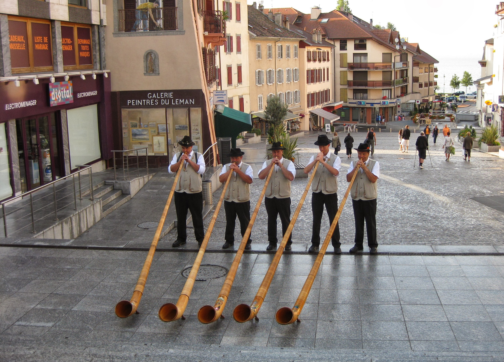
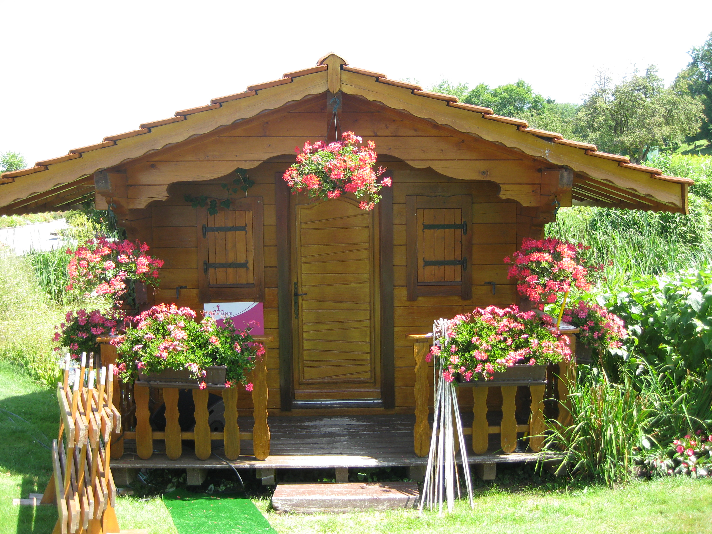

|
|
|
|
Evian Masters - Thursday July 23rd - Day 1
The Evian hot air balloon had arrived, and was anchored somewhere off the course behind the 18th fairway. Watched Tutta, Seon Hwa Lee and Louise Friberg play the first. Dave Brooker was wearing his air boot thingy again. Saw Terry caddying for Momoko Ueda. Larry had said that Terry was feeling really unwell this week. He only showed at L'Embuscade on Monday night. Ueda's group was filled by both of the Miyazatos. Must have been a commentators nightmare. Wie was playing with Cristie Kerr and Gwladys Nocera so they had a big following. Joined the Oz Lasses in watching LD, Karrie and Rachel Hetherington go off the first. They were a lot happier cos their luggage had finally arrived. Spotted Amy Yang had gone into the water hazard on 18 and watched her get the ruling, and drop her ball in the drop zone. She made bogey. Yani Tseng was playing with Candie Kung and Se Ri Pak, who was kitted out in canary yellow.
{kind=link}
As Sophie had gotten me my guest accreditation, it was only fair to follow her for a number of holes. She was playing with two French players and therefore had a big gallery. She hit her 1st tee shot in the rough, her approach hit a greenside tree and her chip was so so. Bogey ensued. Decided to give the trip to the bottom of the course a miss and catch up with her at the 6th.
Saw from the leaderboard that Becky Brewerton was at the top. Watched her play a bit on 15 before setting off with Sophie's group down the 6th. Discovered that holes 9 to 14 are up at the top of the course and the players, caddies and marshalls get a buggy ride up from the 8th green to the 9th tee whilst we poor spectators have to scramble up the mountainside! At the 10th tee no-one made any attempt to tee off. This was because Yani was trudging her way back to the tee as she had hit her drive way right and OB. She apologised to Soph's group and played the hole by herself as her playing partners had played on by themselves. Sophie ended up with a 1 under par round tied for 27th. Christina Kim came over to say Hi. She had shot 3 over and described herself on the golf course today as "a f**king 5 year old and a petulant one at that".
 Sat with Karen Stupples and Bobby (her caddy/hubby) on the terrace outside the clubhouse. They told us about the fire at Pavillions du Golf the night before. As they did so (and I got a free bowl of proper chips not French fries) Graham Matthew, Catriona's hubby/caddy arrived and gave us all the gory details. He was sitting on the balcony shoeless e-mailing on his laptop when Catriona asked him if it was raining because she could hear rain. He told her there was no rain but on entering the room heard the noise himself. On opening their door, they saw smoke and flames. As they ran out part of a porch collapsed and Graham burned his feet. The daft bugger then ran back into the rooms to get their passports!
{kind=link}
He went to hospital to have his burnt feet treated whilst Catriona was ringing round trying to get them somewhere else to sleep. Thank goodness they didn't have the kids with them. Amy Yang and her Dad were in the room next door. Their route out was blocked so Dad threw the mattresses out of the window (they were one floor up) and they jumped after tossing the clubs over first.
As we were sat there, the horn blew as there was a storm moving in. LD had managed to finish her round and was more concerned that the football match set for later that evening would be cancelled. Got the bus back down into town. Headed for the L'Embuscade bar where we listened to a bunch of Swiss horn players. We were joined by Karen Stupples and hubby Bobby, and Tutta high fived a few of the caddies as she walked past with her mum on her way to dinner.
After a few glasses of vin rouge we went back to the Brasserie Continental for dinner. Sat next to Mardi Lunn, Audrey (who is now looping for Pat Hurst) and Alex Armas the LET Commissioner. Another Swiss horn player appeared with a singing hurdy-gurdy card organ grinder. There was a British Youth band playing in the square at the end of this evening. All their announcements were made in French which went down well. Their piece de resistance and their encore was YMCA a la Village People complete with dancers doing the arm movements. Mickey Wright and I joined in with them. We seemed to be the only daft ones although it could be Village People were not big in France.